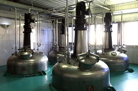
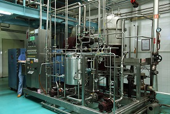

技术实力
Innovation and Technology
深宝茶精深加工事业部目前不仅拥有全国最先进的茶及天然植物速溶粉和浓缩汁的生产设备和技术，整套加工工艺也处于世界先进水平。坚持“科技创新”之路，通过完善科技创新机制，公司在技术和创新方面始终处于行业领先地位，到目前为止，公司拥有自主研发的茶粉、茶浓缩汁和植物提取发明专利技术十余项。
Not only does Tea Deep Processing Business Division have the most advanced equipment and technologies in instant tea, tea concentrates, leaf tea and botanicals extracts in China, TDPBD’s tea processing technology is leading the way globally. TDPBD has taken great strides along the path of “scientific and technological innovation”, bringing forth new ideas and improving mechanisms through science and technology. Continually innovating over the years, TDPBD internal research and development efforts have yielded over ten tea-related patents.

(1)、创新的茶叶加工工艺
和中国农科院茶叶研究所合作，筛选优质茶树品种、开创性建立了新型茶叶加工工艺，生产出香气、滋味品质更佳、稳定性更好的茶饮料专用茶叶。
采用分选、分级、远红外提香设备针对不同茶叶原料和不同档次的产品，对茶叶采用不同的精制加工，保证最终产品能够完美符合茶饮料用原料的香气、滋味、汤色品质特点。
Innovative tea processing techniques
Working with the Tea Research Institute of the Chinese Academy of Agricultural Sciences, Shenbao has devised an innovative way of tea variety selection and processing which ultimately produces better smelling, tasting, higher quality tea leaf and tea drinks.
Tea leaf pass through separation, grading and far-infrared drying equipment, to sort the various tea materials, as to make sure the final products will be in complete accordance with aroma, taste, color and quality.
(2)、国际先进的天然香气提取技术
采用先进的香气萃取设备和工艺，将茶或植物原料的天然香气完美提取出来。
Advanced natural aroma extraction technology
Perfectly extract the natural aroma from tea or botanicals by means of advanced aroma extraction equipment and technique.

(3)、多级膜分离技术
通过多级膜分离工艺，保证浓缩汁澄清透亮，有效截流农药残留，而且创造出滋味更加甘醇、香气等同现泡的速溶茶产品。
Multi-stage membrane separation technology
Multi-stage membrane separation technique is a method that allows tea concentrates to remain clear and bright, and at the same time effectively filters out any pesticide residue, producing tea that taste mellow and smell like fresh brewing tea.
(4)、生物技术
通过生物技术大幅提升产品中的氨基酸、简单儿茶素含量，获得滋味更佳醇和、鲜爽的浓缩汁产品。
Biotechnology
Increases amino acid and simple catechin content through biotechnology, producing tea concentrates that taste mellow and fresh.